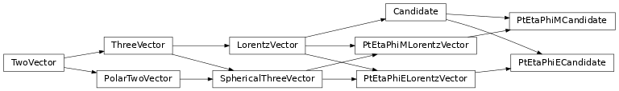

coffea.nanoevents.methods.candidate
Physics object candidate mixin
This provides just a Lorentz vector with charge, but maybe in the future it will provide some sort of composite candiate building tool that automatically resolves duplicates in the chain.
Classes
A Lorentz vector with charge |
|
A Lorentz vector in eta, mass coordinates with charge |
|
A Lorentz vector in eta, energy coordinates with charge |
Class Inheritance Diagram
